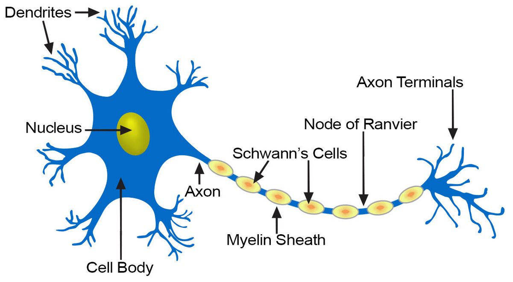
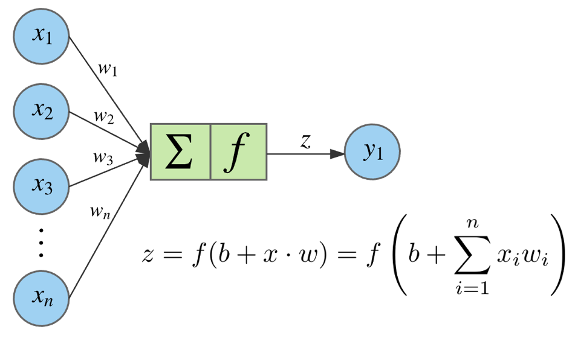
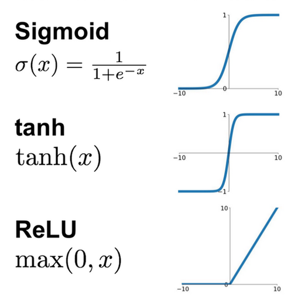
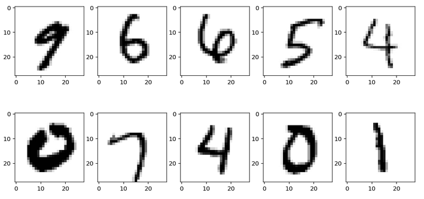

Les réseaux de neurones artificiels
Ecole Nationale Supérieure de Cognitique

Sommaire
- A la découverte des réseaux de neurones
- Premiers pas avec Keras
- Tuning d’un réseau de neurones
A la découverte des réseaux de neurones
Les origines
- 1943 : premier modèle mathématique du neurone biologique (McCulloch et Pitts)
- 1949 : règle de Hebb
- 1958 : le perceptron (F. Rosenblatt)
- 1969 : limites des perceptrons (M. Minsky)
L’inspiration biologique

Le neurone formel de McCulloch et Pitts

La règle de Hebb
Postulat sur l’importance des synapses entre neurones pour l’apprentissage.
“Quand un axone d’une cellule A est assez proche pour exciter une cellule B de manière répétée et persistante, une croissance ou des changements métaboliques prennent place dans l’une ou les deux cellules ce qui entraîne une augmentation de l’efficacité de A comme cellule stimulant B.”
Le perceptron de Franck Rosenblatt

Algorithme d’apprentissage du perceptron
- Initialiser aléatoirement les poids
$ \omega $des connexions - Pour chaque donnée de test
$ x^{(i)} $:- Calculer la sortie du perceptron
$ y'^{(i)} $ - Ajuster les poids :
$ \omega_{next} = \omega + \eta (y^{(i)} - y'^{(i)}) x^{(i)} $
- Calculer la sortie du perceptron
MultiLayer Perceptron (MLP)

La critique de Minsky
Un seul perceptron ne peut pas apprendre une fonction non séparable linéairement.

Aucun algorithme d’apprentissage ne fonctionne pour les couches cachées d’un MLP.
Des progrès décisifs
- 1974 : technique de la rétropropagation (P. Werbos)
- 1986 : apprentissage par rétropropagation (Rumelhart, Hinton, Williams)
- 1989 : preuve mathématique de la capacité des réseaux de neurones à approximer toute fonction mesurable (Hornik, Stinchcombe, White)
- 1989 : début des travaux sur les réseaux profonds à convolution (LeCun, Bengio)
L’avènement du Deep Learning
- 2012 : AlexNet (Krizhevsky, Sutskever, Hinton) remporte la compétition ImageNet
- 2016 : AlphaGo (DeepMind) bat le champion de Go Lee Sedol par 4 victoires à 1
- 2017 : AlphaZero atteint en 24h un niveau surhumain au Go et aux échecs
Apprentissage supervisé
- Régression : prix d’un bien immobilier, prévision de températures, âge d’une personne.
- Classification binaire (0 ou 1) : chat/non chat, spam/non spam, tumeur maligne/bénigne.
- Classification multiclasses : chat/chien/autre animal, reconnaissance de chiffres, catégorisation de tweets.
Anatomie d’un réseau

Algorithme d’apprentissage

Schéma extrait du livre Deep Learning with Python de F. Chollet
Entraînement et inférence

Sortie pour un neurone

Fonctions d’activation
Nécessairement non linéraires

Initialisation des poids du réseau
Afin d’optimiser l’apprentissage, ils doivent :
- Etre non nuls
- Etre aléatoires
- Prendre des valeurs faibles
Vectorisation des calculs

Sortie de la couche 1

Sortie de la couche 2

Sortie de la couche 3

Ajustement des poids du réseau
Objectif : minimiser la fonction de perte (loss)
Principe : descente de gradient
$$\theta_{next} = \theta - \eta\nabla_{\theta}\mathcal{L}(\theta)$$
La rétropropagation
Objectif : calculer le gradient de la fonction de perte par rapport à tous ses paramètres (les poids du réseau).
Principe : appliquer la règle des dérivations en chaîne ou chain rule pour calculer les dérivées partielles de la fonction de coût.
En pratique
Premiers pas avec Keras
Présentation de Keras
Librairie Python de création de réseaux de neurones conçue par François Chollet.

Fournit une API de haut niveau au-dessus de TensorFlow, Theano ou CNTK.
Exemple : création d’un MLP
Réseau souhaité :
Définition du réseau
# Sequential defines a linear stack of layers
from keras.models import Sequential
# Dense defines a fully connected layer
from keras.layers import Dense
model = Sequential() # Create a new network
# Add a 4-neurons layer using tanh as activation function
# Input shape corresponds to the input layer (no of features)
model.add(Dense(4, activation='tanh'), input_shape=(3,))
# Add a 4-neurons layer using tanh
# Input shape is infered from previous layer
model.add(Dense(4, activation='tanh'))
# Add a 1-neuron output layer using sigmoid
model.add(Dense(1, activation='sigmoid'))
Configuration du réseau
# Configuration of the training process
# optimizer: gradient descent optimization method
# loss: loss function
# metrics: list of metrics monitored during training and testing
model.compile(optimizer='rmsprop',
loss='binary_crossentropy',
metrics=['accuracy'])
Apprentissage et évaluation
# Launch the training of the network on the data
# epochs: number of epochs to train the model
# (An epoch is an iteration over the entire training dataset)
# batch_size: number of samples used at each training iteration
# The returned history object contains the monitored metrics
history = model.fit(x_train, y_train, epochs=5, batch_size=64)
# Compute the loss value & metrics for the network on test data
loss, acc = model.evaluate(x_test, y_test, verbose=0)
En pratique
Le “Hello World” du Deep Learning : MNIST handwritten digits
Jeu de 70 000 chiffres manuscrits stockés sous forme d’images 28x28 en niveau de gris (0 à 255).

Le réseau utilisé pour MNIST

Schéma extrait du livre Neural Networks and Deep Learning de M. Nielsen
Création du réseau
# Create a (784, 15, 10) model
model = Sequential()
# Use ReLU for hidden layer
model.add(Dense(15, activation='relu', input_shape=(28 * 28,)))
# Use softmax for output layer
model.add(Dense(10, activation='softmax'))
model.compile('rmsprop', 'categorical_crossentropy', metrics=['accuracy'])
La fonction Softmax
$$\sigma(z)_j = \frac{e^{z_j}}{\sum_{k=1}^K {e^{z_k}}}$$
Représente une distribution de probabilités sur K catégories.
Utilisée comme fonction d’activation de la couche de sortie pour la classification multiclasses.
Renvoie un vecteur de probabilités : chaque résultat attendu doit être fourni sous la forme d’un vecteur binaire.
Encodage one-hot
Permet de transformer un vecteur de valeurs numériques discrètes en une matrice associant un vecteur binaire à chaque valeur.
from keras.utils import to_categorical
x = np.array([1, 2, 0, 2, 1])
print(x.shape) # (5,)
# One-hot encoding
x = to_categorical(x)
print(x.shape) # (5, 3): 5 elements and 3 possible values for each one
print(x[0]) # [0. 1. 0.], corresponding to 1
print(x[1]) # [0. 0. 1.], corresponding to 2
print(x[2]) # [1. 0. 0.], corresponding to 0
print(x[3]) # [0. 0. 1.], corresponding to 2
print(x[4]) # [0. 1. 0.], corresponding to 1
Chargement et préparation des données
# Load the Keras MNIST digits dataset
(train_images, train_labels), (test_images, test_labels) = mnist.load_data()
# Reshape images data into a (number of samples, 28x28) matrix
x_train = train_images.reshape((60000, 28 * 28))
x_test = test_images.reshape((10000, 28 * 28))
# Change pixel values from (0, 255) to (0, 1)
x_train = x_train.astype('float32') / 255
x_test = x_test.astype('float32') / 255
# One-hot encoding of expected results
y_train = to_categorical(train_labels)
y_test = to_categorical(test_labels)
Tuning d’un réseau de neurones
Choix des hyperparamètres
- Nombre de couches
- Nombre de neurones sur chaque couche cachée
- Fonctions d’activation
- Learning rate
- Taille du mini-batch
- …
Le processus de choix est itératif.
Algorithmes d’optimisation de la descente de gradient
Momentum
Accélère la descente de gradient dans la direction du minimum.
Analogie : une boule qui prend de la vitesse dans le sens de la pente

Autres techniques
- RMSprop (Root Mean Square Prop) : utilise les gradients précédents pour adapter le learning rate.
- Adam (Adaptive Moment Estimation) : combine Momentum et RMSprop
Optimisation/généralisation
Lutter contre l’underfitting :
- Augmenter la taille du réseau
- Entrainer le réseau plus longtemps
Lutter contre l’overtiffing :
- Utiliser plus de données pour l’entrainement
- Limiter la taille du réseau
- Ajouter une régularisation
- Introduire le dropout
Régularisation
Principe : forcer les poids à prendre de faibles valeurs en ajoutant à la fonction de perte un surcoût lié aux grandes valeurs des poids.
- L1 :
$ \frac{\lambda}{m} {\sum |{\theta_{ij}}|} $ - L2 :
$ \frac{\lambda}{m} {\sum {\theta_{ij}}^2} $
$ \lambda $ est appelé taux de régularisation.
# Add L2 regularization to a layer
model.add(Dense(16, kernel_regularizer=regularizers.l2(0.001),
activation='relu', input_shape=(10000,)))
Dropout
Principe : supprimer aléatoirement certaines connexions (poids = 0) pendant l’apprentissage.
# Add a layer with 50% dropout during training
model.add(Dense(16, activation='relu', input_shape=(10000,)))
model.add(Dropout(0.5))